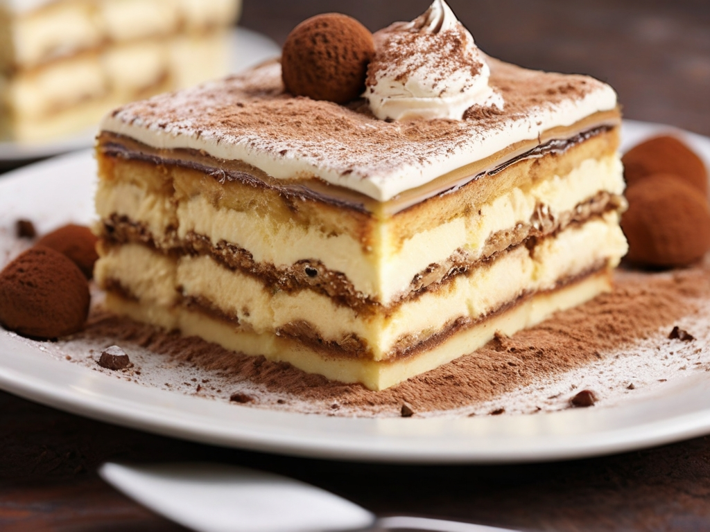

Tiramisu
A classic Italian dessert that's rich and creamy

Main Ingredients
- 250 g mascarpone cheese
- 200 ml heavy cream
- 3 eggs (separated)
- 100 g sugar
- 200 ml strong brewed coffee (cooled)
- 30 ladyfinger biscuits
- 2 tablespoons cocoa powder
- 1 tablespoon coffee liqueur (optional)
- Prepare the cream: In a bowl, whisk the egg yolks and sugar until creamy. Add the mascarpone cheese and mix until smooth.
- Whip the cream: In another bowl, whip the heavy cream until stiff peaks form. Gently fold it into the mascarpone mixture.
- Dip the ladyfingers: Quickly dip each ladyfinger into the cooled coffee (mixed with coffee liqueur if using) and arrange them in a single layer in a serving dish.
- Layer the mixture: Spread half of the mascarpone cream over the ladyfingers.
- Repeat: Add another layer of dipped ladyfingers followed by the remaining cream mixture.
- Chill: Cover and refrigerate for at least 4 hours (or overnight) to set.
- Serve: Before serving, dust the top with cocoa powder and enjoy your delicious tiramisu!